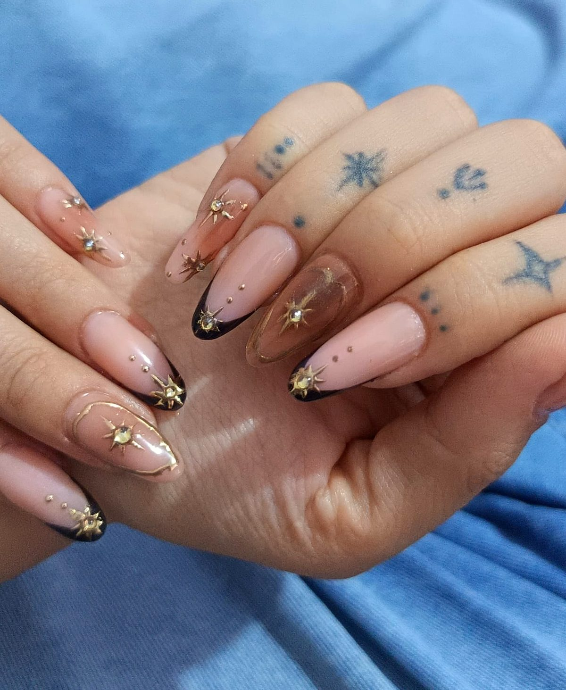

Uñas soft gel
Extensiones con tips de gel suave: ligeras, flexibles y muy naturales. Ideales si quieres largo sin sentir peso. Duran de 3 a 4 semanas.
Desde S/ 90
Nail artist a domicilio · Lima, Perú
Rare Nail It es un servicio de manicure a domicilio en Lima especializado en soft gel, builder gel, poly gel y uñas acrílicas, con nail art hecho a mano: estrellas doradas, flores 3D, lunares y francesas de color.

Servicios y precios
Llevo todo el equipo a tu casa u oficina en Lima. Cada servicio incluye preparación de la uña, cutícula, forma a tu gusto y un diseño sencillo. El nail art se suma según el diseño.
Extensiones con tips de gel suave: ligeras, flexibles y muy naturales. Ideales si quieres largo sin sentir peso. Duran de 3 a 4 semanas.
Refuerza tu uña natural, la nivela y la protege para que crezca fuerte. Perfecto para uñas cortas o medianas que se quiebran. Dura de 3 a 4 semanas.
Lo mejor del gel y del acrílico: resistentes, livianas y sin olor fuerte. Excelentes para formas almendra y coffin. Duran de 3 a 4 semanas.
Las más resistentes para largos extremos y formas como stiletto, almendra o coffin. Para que tus diseños luzcan al máximo.
Diseños a mano alzada, flores 3D, piedras y cristales, estrellas doradas, lunares, rayas y francesas de color. Tú traes la idea, yo la hago realidad.
Retiro seguro sin dañar tu uña natural, o relleno de mantenimiento para que tu set siga perfecto unas semanas más.
Precios referenciales en soles (PEN). El precio final depende del largo, la forma y el diseño. Te confirmo el total por WhatsApp antes de la cita.
¿Cuál elijo?
Las cuatro técnicas duran entre 3 y 4 semanas. La diferencia está en el peso, el largo que permiten y el acabado. Esta tabla te ayuda a elegir.
| Técnica | Ideal para | Largo | Sensación | Duración | Desde |
|---|---|---|---|---|---|
| Soft gel | Look natural y ligero | Corto a largo | Muy liviana y flexible | 3–4 semanas | S/ 90 |
| Builder gel | Fortalecer tu uña natural | Corto a medio | Natural, como tu uña | 3–4 semanas | S/ 80 |
| Poly gel | Resistencia sin peso | Medio a largo | Liviana y firme | 3–4 semanas | S/ 100 |
| Acrílico | Largos extremos y stiletto | Largo a extra largo | La más resistente | 3–4 semanas | S/ 110 |
Portafolio
Cada set es único. Estos son algunos trabajos recientes de Rare Nail It. Toca una foto para verla en grande. Hay más en Instagram @rare.nail.it.

Sobre mí
Soy la nail artist detrás de Rare Nail It. Hago cada set a mano y a domicilio para que no pierdas tiempo en tráfico ni en salas de espera. Me encantan los detalles: una estrella dorada en el lugar justo, una flor en relieve, una francesa con color. Mi meta es que tus uñas se vean rare: únicas y tuyas.
Cobertura
Rare Nail It atiende a domicilio en estos distritos de Lima Metropolitana. ¿Estás en otro distrito? Escríbeme y lo coordinamos.
Reserva en 3 pasos
Reservar toma menos de 5 minutos por WhatsApp. Una cita dura entre 1 hora y media y 2 horas y media, según la técnica y el diseño.
Mándame un WhatsApp con la técnica que quieres y una foto de referencia del diseño.
Te confirmo el precio final, el día, la hora y tu dirección en Lima.
Llego con todo el equipo. Tú solo eliges la música.
Preguntas frecuentes
Rare Nail It hace uñas acrílicas, soft gel, poly gel y builder gel a domicilio en Lima, en distritos como Miraflores, San Isidro, Surco, San Borja, Barranco, Jesús María, Lince y Magdalena. Se reserva por WhatsApp.
En Rare Nail It el set de uñas soft gel cuesta desde S/ 90 e incluye un diseño sencillo. El nail art y la decoración 3D se cotizan aparte, desde S/ 10 por uña.
Con buen cuidado duran entre 3 y 4 semanas. Después se recomienda un mantenimiento o retiro profesional para cuidar la uña natural.
Entre 1 hora y media y 2 horas y media, según la técnica, el largo y el diseño elegido.
El soft gel es el más ligero y natural; el builder refuerza la uña propia sin alargarla mucho; el poly gel combina resistencia y ligereza; y el acrílico es el más resistente para largos extremos y formas como stiletto. Mira la tabla comparativa.
Se acepta efectivo, Yape, Plin y transferencia bancaria.
Escríbeme por WhatsApp y separa tu cita a domicilio en Lima. Los fines de semana se llenan rápido.